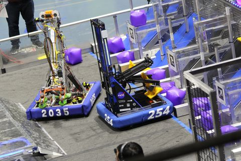
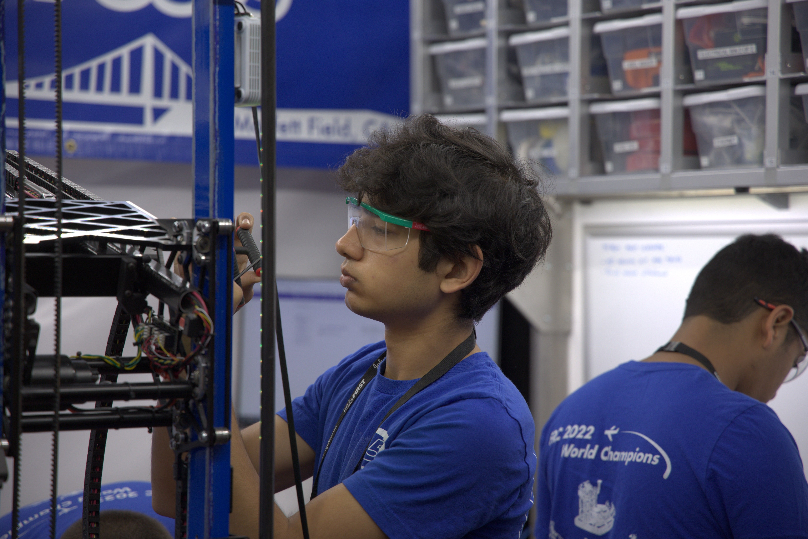
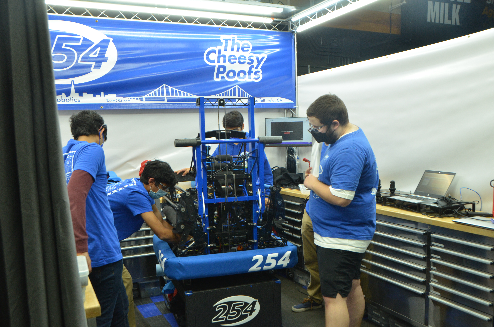

Sideways
Electrical & Mechanical Lead
FIRST World Championship WinnerFRC Team 254 / The Cheesy Poofs / 2022 & 2023
Mechanical design, electrical leadership, and countless hours turning ambitious ideas into competition hardware. My experience on Team 254 shaped how I approach engineering and what it means to build as a team.
Electrical & Mechanical Lead
FIRST World Championship WinnerLaterator Design Owner & Electrical Lead
#1 Worldwide by OPR01 / Background
My time on Team 254 was a major part of my high school experience. I invested substantial time in the workshop, contributing to mechanical development, electrical integration, and the work required to prepare our robots for competition.
The two seasons presented very different challenges. In 2022, our robot collected and shot cargo before climbing at the end of the match. In 2023, the challenge shifted to manipulating cones and cubes, reaching scoring locations, and balancing on a charge station.
Across both years, I learned to connect individual design decisions with the performance of the complete robot. The accomplishments belonged to the entire team; my contributions combined technical ownership with the hands-on work needed to make those systems function together.
02 / 2022 · Rapid React
Sideways combined swerve drive, two full-width intakes, a cargo serializer, a turreted shooter with an adjustable hood, and a traversal climbing mechanism. These systems supported a strategy centered on fast cargo cycles and a strong endgame.
As an electrical and mechanical lead, I contributed across the build and integration process. My work connected mechanical hardware with the electrical systems needed to operate it, alongside the ongoing assembly and troubleshooting that came with preparing the robot for competition.
Dual intakes collected cargo and fed it into the serializer, which organized the flow toward the shooter.
The turret and adjustable hood allowed the scoring system to respond to changing robot positions.
Swerve drive supported maneuverability and efficient movement between tasks.
The climber, reaction arm, and extending stinger worked together to reach the traversal rung.
Our team won the FIRST World Championship.
Being part of that season showed me how much competition performance depends on the preparation behind it: careful integration, testing, maintenance, and people willing to keep working through problems.
03 / 2023 · Charged Up

Breakdown used a vertical elevator, an extending laterator, and a distal gripper to position cones and cubes for scoring. The robot also incorporated a ground intake, swerve drive, and deployable forks.
In 2023, I owned the laterator design, served as electrical lead, and contributed extensively to the CAD and overall mechanical design of the robot. This gave me responsibility for a major mechanism while remaining closely involved with the systems around it.
Our robot finished as the highest-ranked robot worldwide by OPR. That accomplishment reflected the combined work of the team across mechanisms, controls, driving, strategy, and competition support.
OPR is a statistical estimate of scoring contribution, distinct from championship results.
04 / Mechanism ownership
The laterator provided the robot’s extending reach, carrying the gripper outward from the elevator. Coordinating vertical positioning with horizontal extension allowed the robot to reach scoring locations while retaining a compact retracted pose.
Owning the laterator meant thinking beyond the nominal extended and retracted positions. I worked through the mechanism’s CAD, packaging, and interfaces while considering how it connected to the elevator, gripper, and complete robot.
The design needed to balance reach, stiffness, mass, and assembly complexity. Because the gripper sits at the end of the extension, its mass and loading affect the behavior of the entire mechanism.
The team’s published technical discussion describes a three-stage laterator using carbon-fiber tubes and lightweight rolling bushings. It also documents structural challenges and reinforcement changes during the season.
That development process reinforced an important lesson for me: selecting lightweight materials is only part of the problem. Joint details, contact loads, assembly methods, and unexpected impacts also determine how well a mechanism survives.
05 / Systems integration
Electrical leadership was a major part of my contribution across both seasons. Working on both mechanical and electrical systems gave me a broader view of the robot: a mechanism’s design affects where its wiring can run, how components can be accessed, and how easily the assembly can be maintained.
I contributed substantial time to the physical build and integration process, working with the team to connect mechanical development with the electrical implementation. In 2023, I combined that role with laterator ownership and significant contributions to the overall robot CAD.
Design the mechanism and its interfaces together.
These seasons helped me understand why electrical access, moving connections, and serviceability need attention while the mechanical design is still taking shape.
06 / Behind the robot
Competition was the visible part of a much larger effort. The workshop and event work—building, checking, adjusting, and getting ready to run again—was where I spent much of my time.


07 / Looking back
Team 254 gave me experience taking responsibility for hardware while contributing to something much larger than my own subsystem. I learned to work through design changes, communicate across disciplines, and stay involved when the work moved from CAD to assembly and competition.
The 2022 championship was an unforgettable team accomplishment. In 2023, owning the laterator and contributing more deeply to the overall design gave me a stronger sense of engineering ownership.
Those experiences continue to influence my work in college robotics, research, and industry: understand the complete system, take the interfaces seriously, and keep learning from the hardware.